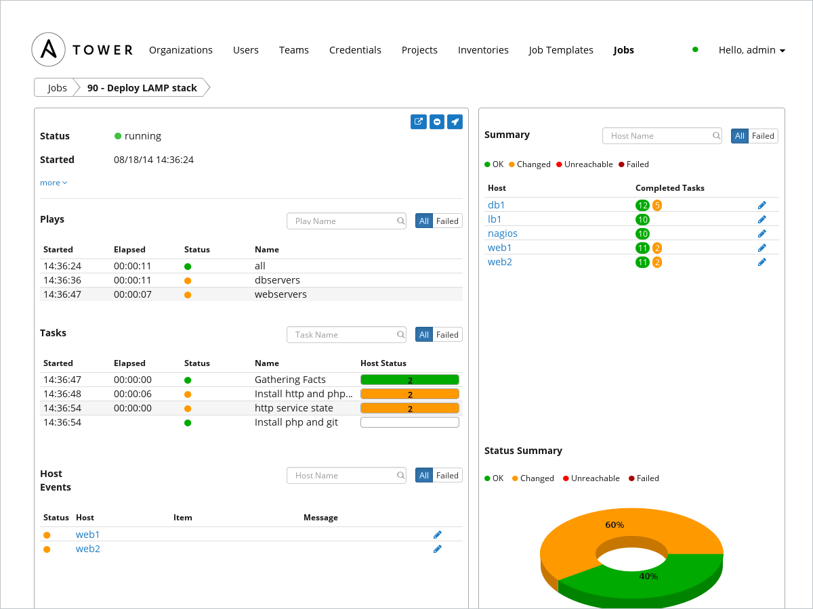
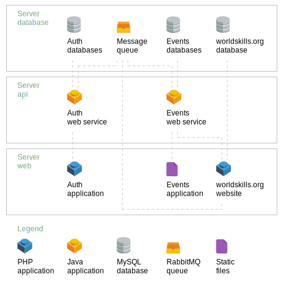
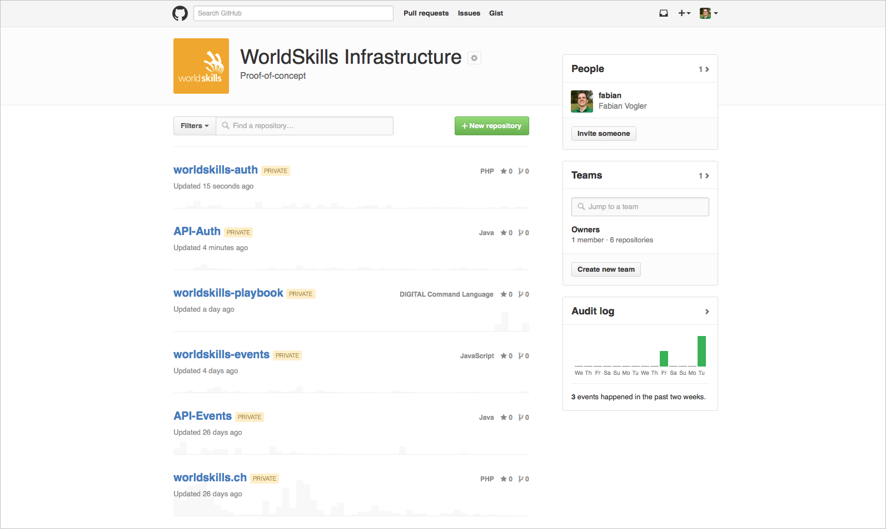
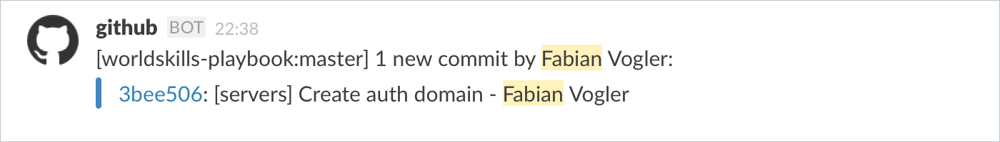
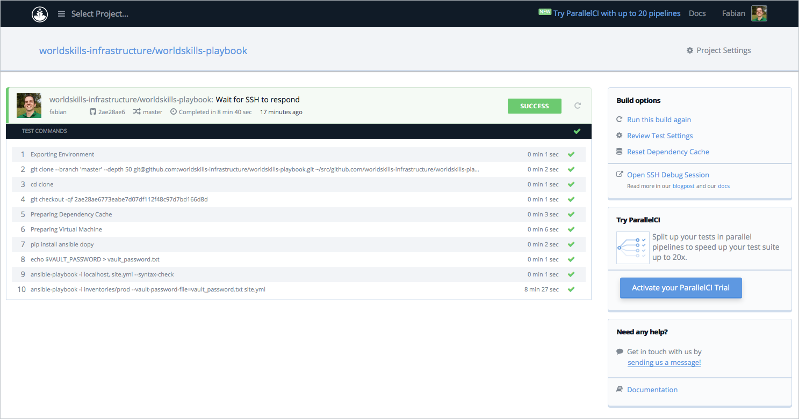
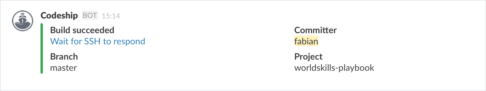
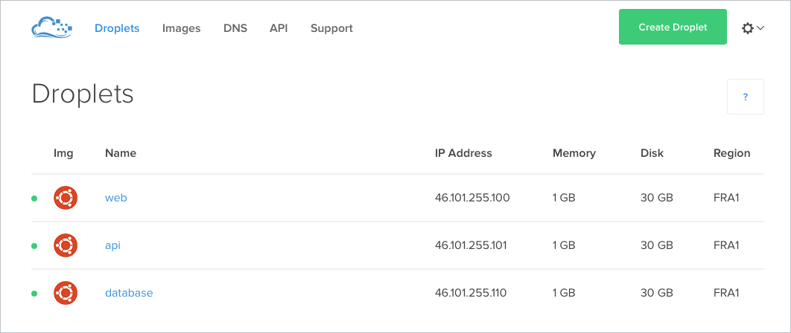
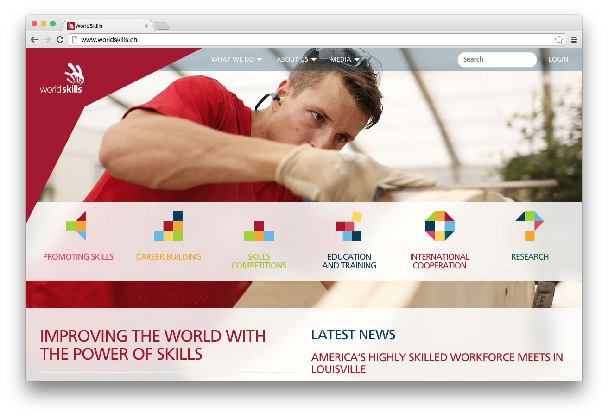

All sources are numbered [n] and listed in the bibliography in the appendix. Basic knowledge in computer science is required for reading and understanding the thesis. The most important acronyms and concepts are explained in the glossary that can be found in the appendix as well.
This document has been written in HTML and was converted into a PDF document with Prince. The font used is Helvetica Neue, created by D. Stempel AG and based on Helvetica by Max Miedinger.
Abstract
WorldSkills International manages its web infrastructure manually with a small team of developers. Target of the thesis is to develop a concept for a testable and reproducible infrastructure where all changes are done within a revision control system. This increases visibility of changes within the IT team and makes the change tracable.
The current infrastructure requirements were analyzed and documented. Three different types of software for provisioning of servers and deployment of applications were considered for solving the problem. Each type was evaluated with a popular representative according to the requirements. The automation software Ansible was choosen as best fitting for the requirements.
An architecture concept for an automated infrastructure was developed and successfully verified in a proof-of-concept. All software and configuration files required are defined in structured text files that can be read and transmitted to the server with Ansible. Local development and testing can be done in a virtual machine on the developers’ computer. The whole infrastructure can easily be cloned by running the provisioning scripts against new servers. The automated process of setting up a new infrastructure environment for testing is simply initiated by creating a new branch adhering to a naming scheme.
Contents
Introduction
Current Situation
WorldSkills International is a non-profit membership association which organizes a world championship in skilled professions every two years. To manage members and to organize the preparation and execution of the competition the organization runs multiple web applications. The mix of PHP and Java applications consists of legacy systems and a newly developed software system with a service-oriented architecture.
Screenshots applications
All web software is running on rented virtual servers with a Linux operating system. They are managed manually using a web control panel (Parallels Plesk). Changes to the infrastructure are done by the four internal software developers manually.
Fundamental changes like the migration to a new server or the switch to a new runtime engine require a lot of knowledge about the existing system and manual testing of the new installation.
Objectives
The main goal of this thesis is to develop a concept for a versioned, testable and reproducible infrastructure. Changes to the system should be visible for the IT team and traceable if needed. As a result knowledge is shared in written form.
To achieve this goal, manual steps to build or change the infrastructure should be replaced by code stored in a revision control system. Three different types of software for provisioning of servers and deployment exist at the moment:
Software containers: all software needed to run an application is encapsulated and run in operating system-level virtualization (e.g. Docker, rkt)
Configuration repository: A centralized repository with configuration files and software is used to configure servers (e.g. Chef, Puppet, CFEngine)
Remote command execution: Installation commands and configuration files are transmitted in a coordinated manner to a remote server (e.g. Ansible, SaltStack, Rex)
These types of software should be evaluated and an architecture documentation as well as a test concept should be written. The proposed architecture should then be tested in a proof-of-concept.
Tasks
The following tasks will be completed by the student as part of the Bachelor thesis:
Analyze infrastructure requirements
Test requirements with popular representatives for each type of provisioning software
Evaluate provisioning software
Write architecture documentation
Develop test concept
Implement proof-of-concept with automated provisioning and deployment
Project Management
The following gantt diagram shows an overview of the timeline during the project as well as the dates of the most important milestones.
February
March
April
May
June
July
Kick-Off
25.02.15 ◆
Requirements analysis
Software evaluation
Design Review
◆ 29.04.15
Architecture concept
Test concept
Proof-of-concept
Final date
31.07.15 ◆
Project schedule
According to the rules for the bachelor thesis at least 360 hours have to be invested into the bachelor thesis. The planning was done according to those hours. WorldSkills International provided 2 days per week to work on the thesis.
Both the requirements analysis and the software evaluation took longer than expected as many aspects had to be studied in detail. In return the architecture concept could be done faster. The proof-of-concept also took less time then expected as without many problems. Writing the documentation was slightly underestimated as well.
Description
Planned
Actual
Requirements analysis
64 h
~72 h
Software evaluation
48 h
~64 h
Architecture concept
88 h
~80 h
Test concept
40 h
~40 h
Proof-of-concept
80 h
~64 h
Write documentation
40 h
~56 h
Total
360 h
376 h
Comparison planned and actual hours
Requirements
Overview
The following requirements were established by analysing the existing infrastructure and taking known problems into account.
Stakeholders
The following stakeholders have been found for the current infrastructure. They have a direct or indirect influence on the requirements. These stakeholders are also used in the system context diagram.
Stakeholder
Description
Developer
Works at WorldSkills International and is responsible for the development and maintenance of the infrastructure. There are four developers working full-time for WorldSkills International. There is no designated system administrator. Developers have different backgrounds and therefore different knowledge about specific components of the instrastructure but they all share the responsibility for keeping the infrastructure running.
All developers are using Mac OS X for development. They work from three different time zones.
User
Interacts with applications running on the WorldSkills infrastructure. This includes the Secretariat, Members, Competition personnel and website visitors. Most of them are registered users. Their expectations for fast and continuously running services influence the requirements.
Hosting provider
Provides virtual Linux servers for the infrastructure. As they are in a highly competitive and fast moving market they can become obsolete and need to be replaced with another hosting provider with a better offering.
Hosts Git code repositories for WorldSkills International. Provides a web interface for managing permissions of the repositories. They control how code can be accessed.
Provides a hosted continuous integration software for WorldSkills International. The software is based on Linux with support for PHP, Java and JavaScript applications. Their functionality defines how applications can be built and deployed.
Stakeholders
System Context
System context
Both Developer and User need to interact with the infrastructure or the applications running on it. They have a direct influence on the requirements and lie within the system context.
The source code of most applications is stored on GitHub. Codeship is used for running automated tests and executing the deployment of new versions. The hosting provider provides the servers for running the infrastructure. All three vendors influence the requirements indirectly with the constraints of their services. They are outside of the system context as they cannot be influenced.
Applications
The current infrastructure consists of multiple applications deployed on three servers. There is no requirement to keep them on separate servers. The following diagram gives an overview of all applications. A detailed description of each applications follows.
System overview
The following table lists all applications and their special requirements.
Application
Description
Requirements
RabbitMQ
MySQL
JavaMail
Uploads
Web services
Java applications for managing organization information
Management
JavaScript applications for accessing the web services
Auth
PHP application for login
worldskills.org
Organization website
WSC2015 website
WorldSkills São Paulo 2015 event website
WSC2017 website
WorldSkills Abu Dhabi 2017 event website
Members map
World map with Facebook pages from other countries
IL
PHP application for managing infrastructure lists
Aggregator
PHP application which serves the mobile app content
Who-is-who
PHP application for managing organization personnel
Registrations
PHP application for registering people and a web service
Forums
Dicussion forums
Portal
Website with information about WorldSkills Competition participants
CIS demo
Competition Information System demo
Rooms
Java application for reserving meeting rooms
Archive
Static copies of old event websites
Mailer
PHP application for sending emails to groups of people
SMP
Skill Management Plan for planning the skill competitions
CPT
Competition Planning Timetable with important deadlines
Application requirements
User Stories
To describe the functional requirements for the new infrastructure user stories are used. They are prioritized in agreement with all developers in three levels: Must, Should, Could.
Name
R01 PHP applications
Description
As a developer I want to run multiple PHP applications so users can access them. A PHP application usually needs a MySQL database and the source code is stored on GitHub.
Acceptance Criteria
All PHP applications are running and can be accessed with a web browser.
Priority
Must
Name
R02 Java applications
Description
As a developer I want to run multiple Java applications on a Tomcat server so users and other applications can use the services provided by the applications. A Java application usually needs a MySQL database, the source code is stored on GitHub.
Acceptance Criteria
All Java applications are running and can be accessed over HTTP/S.
Priority
Must
Name
R03 Server configuration
Description
As a developer I want to change a server configuration file to optimize a setting. For example the MySQL Query Cache size needs to be increased. Another example would be that the servlet container configuration needs a new variable due to a change in the application.
Acceptance Criteria
A configuration file gets modified and the change is pushed to the repository. The new configuration file is automatically deployed to the server and the affected applications loads the new configuration.
Priority
Must
Name
R04 Application deployment
Description
As a developer I want to deploy a new version of an application so users can benefit from new features or fixes. The deployment causes no downtime.
Acceptance Criteria
A new version of an application gets pushed to the repository. Automated tests of the application are executed and if they pass the application gets deployed to the server. The old version keeps responding to requests until the new version is ready.
Priority
Should
Name
R05 Staging area
Description
As a developer, I want to test a new version of a web service in a staging area so I can make sure it works correctly with all other components of the system.
Acceptance Criteria
A new version of a web service is pushed in a separate branch, the functionality is available for testing in a staging environment within 30 minutes from the push.
Priority
Should
Name
R06 Hosting provider switch
Description
As a developer I want to switch the server hosting provider so I can profit from a better offer. Another reason could be that the current hosting provider shuts down or its no longer justifiable because of his actions (e.g. security problems).
Acceptance Criteria
The infrastructure can be ported to a different provider within 48 hours. All needed software is installed automatically, databases and user files are transferred manually.
Priority
Could
Non-functional Requirements
The following non-functional requirements are not conclusive but they are the most critical ones. They are classified according to quality model of ISO/IEC 25010:2011 and prioritized in three levels: Must, Should, Could.
The requirements are based on the current infrastructure and events in the past related to it.
Name
R11 Configuration files
Classification
Changeability
Description
All configuration files are stored in a code repository.
Priority
Must
Name
R12 Change history
Classification
Accountability
Description
Every change must be traceable to a developer. Associated with every change is an explanation.
Priority
Must
Name
R13 Open Source
Classification
Replaceability
Description
All software used for infrastructure has to be built on open-source software. This guarantees that components can easily be ported to different providers or maintainers. It also allows other Members to easily copy parts of the infrastructure.
Priority
Must
Name
R14 Test environment
Classification
Testability
Description
To test configuration changes to it, the whole or part of the infrastructure can be started in a test environment. This is different from the staging environment in that the test environment can be local and automated tests are executed against it.
Priority
Must
Name
R15 Encrypted passwords
Classification
Confidentiality
Description
Server passwords should be stored only encrypted on third-party systems. The advantage of storing encrypted passwords in the code repository and sharing a key file instead of sharing the passwords in a file is that the file doesn't need to be updated for everyone each time a password is added.
Priority
Must
Name
R16 Superuser access
Classification
Technical accessibility
Description
In case of a problem that only occurs in a certain environment, a developer needs unrestricted access to the server to debug the error and try out different solutions.
Priority
Must
Name
R17 Custom software
Classification
Interoperability
Description
New software can be installed without restrictions. New features or analytics tools might require the installation of additional software.
Priority
Must
Name
R18 Learning curve
Classification
Learnability
Description
How to use the software system to install and configure the infrastructure can be learned quickly so all developers can make changes to the infrastructure without spending weeks studying it.
Priority
Should
Name
R19 Horizontal scaling
Classification
Changeability
Description
Applications - that can be horizontally scaled - can be installed on multiple servers and served through a load balancer.
Priority
Could
Evaluation
Introduction
Based on the given requirements the following evaluation defines the guiding principles for the architecture concept. It compares the different approaches for configuring and deploying software and how well they fit to the existing environment.
Only specific attributes of the approaches and their software is analyzed, many general comparisons have been written before.
Cloud solutions for managing applications exist, but are usually locked in on the vendor and targeted at high volumes. Our scaling requirements are low as the infrastructure needs to serve mainly the Competition and the Members and they are both limited by other resources (e.g. Member budgets).
Software Containers
This type of software has recently became popular with Docker. The idea is to use the advantages of a virtual machine (isolation, portability, efficiency) while sharing resources. Docker has been chosen as it has been perceived as the most active project. A similar projects is rkt (Rocket) by CoreOS.
Logo Docker
Docker only works on Linux, so for development on Mac OS X the software Boot2Docker is used on the development laptop. Installation instructions are provided in the Docker documentation in the chapter Installation for Mac OS X.
After installation the virtual machine with Linux running Docker is then launched with the following two commands.
$ boot2docker init
$ boot2docker start
Waiting for VM and Docker daemon to start...
.............ooo
Started.
Writing /Users/fabian/.boot2docker/certs/boot2docker-vm/ca.pem
Writing /Users/fabian/.boot2docker/certs/boot2docker-vm/cert.pem
Writing /Users/fabian/.boot2docker/certs/boot2docker-vm/key.pem
To connect the Docker client to the Docker daemon, please set:
export DOCKER_HOST=tcp://192.168.59.103:2376
export DOCKER_CERT_PATH=/Users/fabian/.boot2docker/certs/boot2docker-vm
export DOCKER_TLS_VERIFY=1
Boot2Docker initialization
Another useful tool is Docker Compose which allows multiple instances to be started based on a configuration file. However its usage in production is not recommended at the moment as it's missing some features for managing running instances.
Docker publishes official images for certain applications and programming languages in the Docker Hub Repository. There's also an official image for PHP which can be found on GitHub. Maintained images for recent PHP versions are provided with built-in Apache or PHP-FPM for running the application as a service.
The easiest way to run a PHP application with Docker is to the use Apache web server so the application itself and static files (JavaScript, CSS, etc.) can both be served from one process.
The MySQL server would be started in a separate instance, so an additional Dockerfile for MySQL is needed and then needs to be linked with the container running the PHP application. To simplify this Docker Compose can be used. It's a tool that can start multiple Docker instances based on a configuration file.
Verdict
Pass
Requirement
R02 Java applications
Verification
For Tomcat official images are available from the Docker Hub Repository as well. Multiple versions for Java 7 and 8 are available.
Configuration and the application code can be copied to the working directory of Tomcat - the application is then started automatically. Multiple applications can be bundled into one container or one container per application can be used. Again as with PHP, a MySQL server would be started in a separate instance.
Verdict
Pass
Requirement
R03 Server configuration
Verification
To guarantee reproducible containers, configuration files are usually copied into the container at build time. This allows the container to be tested in a staging environment and guarantees the same results in the production environment.
Docker provides the tools to build the image and upload it to a central repository, however it doesn't provide any tools to do an actual deployment of the image to a live environment out of the box.
Verdict
Fail
Requirement
R04 Application deployment
Verification
There are different ways to implement this with Docker. One way would be to build a new image, deploy it separately and then route requests with a load balancer to the new image. However as noted before, Docker doesn't provide tools to do a deployment of the image nor the orchestration of running machines.
Another possibility would be to use volumes to deploy the new application into the running container but this would require each application to have built-in support for zero downtime deployment, which is not always the case (Tomcat supports this with parallel deployment but not PHP).
Verdict
Fail
Requirement
R05 Staging area
Verification
Containers can be started quickly in a new environment (e.g. a new virtual server). Docker Compose can be used here for starting up multiple containers at once. Database fixtures can be loaded from additional containers which are linked to the database container.
Verdict
Pass
Requirement
R06 Hosting provider switch
Verification
Thanks to virtualization the only requirement for a new hosting provider would be to run Docker. Transfer of the data is possible by launching additional containers on the old server and mounting the data volumes. The installation of Docker would need to be done manually if Docker is not preinstalled by the hosting provider. But more importantly the configuration of the host machine (e.g. SSH keys, logging, security settings) could not be automated with Docker.
Verdict
Fail
Requirement
R11 Configuration files
Verification
All configuration files can be stored in the code repository and then added to the container during build time.
Verdict
Pass
Requirement
R12 Change history
Verification
By storing all Dockerfiles and configuration files in a code repository and building the container images on a CI server each change can be traced back.
Verdict
Pass
Requirement
R13 Open Source
Verification
Both Docker and the registry server for Docker are Open Source on GitHub, they are licensed under the Apache License.
Verdict
Pass
Requirement
R14 Test environment
Verification
As with the staging environment Docker Compose can be used for starting multiple containers quickly so tests can be executed.
Verdict
Pass
Requirement
R15 Encrypted passwords
Verification
Secret data is usually passed as environment variables to the Docker container. Docker doesn't provide functionality for encrypting information.
Verdict
Fail
Requirement
R16 Superuser access
Verification
Containers can be accessed from the outside with different methods and superuser access to the host system is required by Docker.
Verdict
Pass
Requirement
R17 Custom software
Verification
There are some limitations of what can be run inside a container on the kernel level, but they are not affecting most use cases.
Verdict
Pass
Requirement
R18 Learning curve
Verification
Immutable applications are a complex topic and Docker requires specific methods for normal tasks.
Verdict
Fail
Requirement
R19 Horizontal scaling
Verification
Multiple instances of images can be started in parallel and Docker Swarm, a clustering tool for Docker, can be used to manage them.
Verdict
Pass
Summary Software Containers
One notable property of Software Containers is their iteration speed. Due to how file changes are saved by the file system, setup commands don't need to be repeated each time but the resulting files can be restored within seconds. This makes experimenting with the container much faster than setting up a complete virtual machine each time.
It became clear that Docker itself is a great tool for reducing the overhead of virtual machines, however it is not a complete solution for infrastructure management (yet).
Advantages
Disadvantages
Active Docker community
Software can be updated for each container independently
Clear separation of concern
Can be scaled well horizontally
Fast development iterations
Added complexity
Additional virtualization layer makes debugging harder
New technology, still in development
Analysis Software Containers
A comparison of all requirements can be found after the analysis of the three different approaches.
Configuration Repository
Chef and Puppet are the most popular representatives for this type of software. It has existed for a few years now and has the target to provide a central repository for infrastructure configuration from which server clients regularly pull their changes. This kind of software type usually also provides a way to use it without a central server but that loses the advantage of having a central point to coordinate changes.
Logo Chef
Chef is used here because of the already existing knowledge of Ruby and its popularity. It is usually running on a Linux machine, so for development a virtual machine with Linux is required. To simplify the setup of the virtual machine, Vagrant can be used. Vagrant is software to run virtual machines based on a configuration file. After installing Vagrant, a virtual machine can be started with a Linux image provided by Chef which already has all the required software pre-installed:
$ vagrant up
Bringing machine 'default' up with 'virtualbox' provider...
default: The Berkshelf shelf is at "/Users/fabian/.berkshelf/…"
==> default: Sharing cookbooks with VM
==> default: Importing base box 'chef/ubuntu-14.04'...
[…]
==> default: Running provisioner: chef_solo...
default: Installing Chef (latest)...
Generating chef JSON and uploading...
==> default: Running chef-solo...
==> default: stdin: is not a tty
==> default: […] INFO: Forking chef instance to converge...
==> default: […] INFO: *** Chef 12.2.1 ***
==> default: […] INFO: Chef-client pid: 2030
==> default: […] INFO: Setting the run_list to ["recipe[example-chef::default]"]
==> default: […] INFO: Run List is [recipe[example-chef::default]]
==> default: […] INFO: Run List expands to [example-chef::default]
==> default: […] INFO: Starting Chef Run for example-chef-berkshelf
==> default: […] INFO: Running start handlers
==> default: […] INFO: Start handlers complete.
==> default: […] INFO: Chef Run complete in 0.017230899 seconds
Vagrant initialization with Chef
Chef organizes commands in recipes and cookbooks. Variables are stored in files called data bags. The books Cooking Infrastructure by Chef and Taste Test were used during the following verification.
Requirements verification
Requirement
R01 PHP applications
Verification
Cookbooks for PHP are available in the Supermarket, the official repository for cookbooks. The PHP cookbook is published and maintained by the company behind Chef itself.
However the functionality provided by the cookbook is mostly focused on the PHP extension repository PEAR, which is not a requirement. A more popular alternative is the apache2 cookbook. It provides the possibility to install the Apache web server with mod_php to run PHP together within a web server.
For MySQL there's an official cookbook available as well which installs and starts a MySQL server as required.
Verdict
Pass
Requirement
R02 Java applications
Verification
The Supermarket also has an official cookbook for Tomcat. Java must be installed separately, again there's a cookbook
available in the Supermarket. The same MySQL cookbook as mentioned before can be used.
Verdict
Pass
Requirement
R03 Server configuration
Verification
With Chef configuration files are usually built from templates which are stored in the repository. Once uploaded to the Chef server the client receives them, replaces the variables in them and puts them to the targeted location. In addition the service using the file can be restarted.
Verdict
Pass
Requirement
R04 Application deployment
Verification
For Tomcat parallel deployment can be used here. The actual deployment to the server is done using the Tomcat Manager App.
The deploy directive can be used to update a PHP application to the latest revision without causing any downtime. It keeps a copy of the current version running and uses symlinks to make the latest version active once all dependencies have been installed.
Verdict
Pass
Requirement
R05 Staging area
Verification
Chef can be used to setup a virtual machine with the needed environment. Once the virtual machine with the Chef client is running it can pull all information needed to setup the environment from the Chef server.
Verdict
Pass
Requirement
R06 Hosting provider switch
Verification
The Chef client needs to be installed manually on a new virtual machine if the hosting provider doesn't provide machines with Chef preinstalled. Once the Chef client is installed it can install all required software and configure the machine as needed.
Verdict
Pass
Requirement
R11 Configuration files
Verification
Configuration files can be stored as templates in the code repository. They get compiled and written to their target destination by Chef.
Verdict
Pass
Requirement
R12 Change history
Verification
All cookbooks and templates can be stored in a code repository, a CI server uploads them to the Chef server for distribution to the clients.
Verdict
Pass
Requirement
R13 Open Source
Verification
Chef Client, Chef Server and Chef Development Kit (DK) are Open Source on GitHub, they are licensed under the Apache License.
Verdict
Pass
Requirement
R14 Test environment
Verification
The cookbooks can also be used to configure the virtual machine on which the tests are running on.
Verdict
Pass
Requirement
R15 Encrypted passwords
Verification
Data bags can store variables for the Chef server. Confidential information can be stored in encrypted data bags. The secret key can be shared within the developers over other secure channels.
Verdict
Pass
Requirement
R16 Superuser access
Verification
No restrictions about access to the server are imposed by Chef.
Verdict
Pass
Requirement
R17 Custom software
Verification
Packages from the Linux distribution are simple to install with Chef, but also custom software can be downloaded and installed.
Verdict
Pass
Requirement
R18 Learning curve
Verification
Chef has a complex architecture and many dependencies on other libraries. Developers not familiar with Ruby also need to learn the syntax first.
Verdict
Fail
Requirement
R19 Horizontal scaling
Verification
Multiple Chef clients can connect to the same Chef server and the same cookbooks can be installed on multiple hosts.
Verdict
Pass
Summary Configuration Repository
The installation of the Chef DK was difficult as it relies on overriding rbenv in the PATH. Some modifications to
.bash_profile were needed to get it running properly.
The possibility to test the cookbooks locally inside a virtual machine with VirtualBox proved handy. However a few times the cookbook failed unexpectedly (e.g. because a wrong package was accidentally installed first) - a complete reinstall solved the problem but took quite some time.
A popular cookbook that was initially selected for deploying Java applications turned out to be incompatible with the latest version of the official Tomcat cookbook for no obvious reason. In general the whole system seemed complex:
many components rely on others and compatibility has to be figured out manually.
Advantages
Disadvantages
Can be used to manage large number of servers
Utilizes system packages
Central server as single source for configuration
Complex dependencies
Maintained server or hosted solution for Chef server needed
Complete reinstall is slow
Analysis Configuration Repository
Remote Command Execution
This is similar to the Configuration Repository described in the previous chapter: Software to be installed and commands to be executed are defined in text files. The main difference is that instead of having a central server where everything is available to get pulled, everything gets pushed to the hosts. In fact Configuration Repository software like Chef also supports this kind of operation mode with Chef Solo.
Ansible, Salt, and Rex are implementations specific for this kind of software type. Ansible is used here because it is only focused on this kind of software type and because of its popularity.
Logo Ansible
Ansible is a Python application and can be installed on a development machine as a Python package according to the Ansible documentation. Ansible uses SSH to communicate to remote servers and execute commands on them. Directives are organized in playbooks and roles.
Again Vagrant can be used to simplify the setup of a remote host and test the playbook. As Ansible requires no specific software on the host any Linux distribution can be used within VirtualBox. The following snippet shows the initialization process of VirtualBox with Ansible:
$ vagrant up
Bringing machine 'default' up with 'virtualbox' provider...
==> default: Running provisioner: ansible...
[…] ansible-playbook […] site.yml
PLAY [all] ********************************************************************
[…]
PLAY RECAP ********************************************************************
default : ok=1 changed=0
Vagrant initialization with Ansible
The book Taste Test was used during the following verification.
Requirements verification
Requirement
R01 PHP applications
Verification
Ansible includes already most tools needed for installing and configuring software using the OS mechanisms. Examples for how to use them are provided on GitHub by Ansible itself.
The Apache web server and mod_php can be installed with the OS packages, their configuration can be created with the Ansible template directive and the service directive makes sure Apache is running. The source code of the PHP application can either be copied to the host or cloned from Git.
MySQL can be installed and configured the same way as Apache.
Verdict
Pass
Requirement
R02 Java applications
Verification
In the examples provided by Ansible they also describe how to install a standalone instance of Tomcat. The installation package gets downloaded from the Tomcat download server, extracted to an appropriate location, the configuration files are created from templates and Tomcat is started as a service. MySQL can be installed with the OS packages.
Verdict
Pass
Requirement
R03 Server configuration
Verification
Configuration files can be either simply copied to the server from the local playbook or templates with variables can be used. Ansible checks if there were any changes in the configuration file and notifies a service to restart if needed. The playbook can also be run from an CI server.
Verdict
Pass
Requirement
R04 Application deployment
Verification
For Tomcat parallel deployment can be used here again. The actual deployment to the server can be done using the Tomcat Manager App or by using Ansible to copy the file to the server.
A combination of the git and file directives can be used to checkout the latest version of the PHP application and activate it with a symlink as soon as all dependencies have been installed.
Verdict
Pass
Requirement
R05 Staging area
Verification
As long as Ansible can connect via SSH to a machine it can set it up as needed. Ansible can also launch new virtual machines in the cloud which is useful for quickly starting a staging area.
Verdict
Pass
Requirement
R06 Hosting provider switch
Verification
As mentioned before the only requirement on the host machine is the ability for Ansible to connect to it. Once this is provided Ansible can setup the new server as required. The only limitation is that Ansible differentiates between package management systems, so switching from Apt (used by Debian) to Yum (used by SUSE Linux) would require some code changes, but this switch is out of scope of this requirement.
Verdict
Pass
Requirement
R11 Configuration files
Verification
All configuration files can be stored as templates or raw files in the code repository of the playbook. Ansible copies them to the target server when executed.
Verdict
Pass
Requirement
R12 Change history
Verification
The playbook and all its files can be stored in the code repository. A CI server can run the playbook if a change has been made.
The playbook can also be executed locally to configure a test environment on the same machine.
Verdict
Pass
Requirement
R15 Encrypted passwords
Verification
Ansible provides a tool called Vault to encrypt files with variables. The encrypted file can automatically be encrypted when running the playbook. The password can be stored in a separate file and shared among developers.
Verdict
Pass
Requirement
R16 Superuser access
Verification
Ansible doesn't restrict how the server can be accessed. In fact Ansible requires that the server can be access using SSH which is the preferred way for developers to access the server as well.
Verdict
Pass
Requirement
R17 Custom software
Verification
Operating system packages as well as custom downloaded software can be installed using Ansible.
Verdict
Pass
Requirement
R18 Learning curve
Verification
Ansible files are easy to read and the concept can be understood quickly. Only the YAML syntax requires a bit of learning but most examples already give a good idea how it works.
Verdict
Pass
Requirement
R19 Horizontal scaling
Verification
Ansible can connect to multiple servers and execute the defined commands there. Servers can also be grouped by their role so that only specific commands are executed on certain servers.
Verdict
Pass
Summary Remote Command Execution
Ansible was easy to install with the Python package manager pip and was instantly ready to use. Because all servers are configured with SSH key authentication already, no additional setup is required to make Ansible usable on them.
It is basically just a thin layer above shell scripts but provides all the tools needed for provisioning and maintaining a server (commands, services, configuration files). It lacks a few advanced features for highly complex setups, but the fact that it's easy to learn is useful in a small team with shared responsibilities.
Advantages
Disadvantages
Few dependencies
Easy to learn
Utilizes system packages
No central server needed
Limited reusability of playbooks
No programming in playbooks possible
System package installation not distribution independent
Analysis Remote Command Execution
Conclusion
Requirement
Software Containers
Configuration Repository
Remote Command Execution
R01 PHP applications
R02 Java applications
R03 Server configuration
R04 Application deployment
R05 Staging area
R06 Hosting provider switch
R11 Configuration files
R12 Change history
R13 Open Source
R14 Test environment
R15 Encrypted passwords
R16 Superuser access
R17 Custom software
R18 Learning curve
R19 Horizontal scaling
Requirements comparison
Software Containers don't comply with all Must requirements, a Configuration Repository misses one Should requirement (Learning curve), and Remote Command Execution matches all requirements.
Even though Software Containers don't comply with all requirements it is still considered a useful concept if it gets combined with a Configuration Repository or Remote Command Execution for orchestration.
Software Containers in Combination
The following rough estimation for introducing a software type alone or together with Software Containers under regular workload also shows the result of the higher complexity of a Configuration Repository compared with Remote Command Execution.
Training
Setup
Migration
Total
Configuration Repository
4 weeks
7 weeks
3 weeks
14 weeks
Configuration Repository with
Software Containers
6 weeks
10 weeks
5 weeks
21 weeks
Remote Command Execution
2 weeks
4 weeks
2 weeks
8 weeks
Remote Command Execution with
Software Containers
5 weeks
8 weeks
5 weeks
18 weeks
Estimation introduction time
The introduction of an orchestration software together with Software Containers could be divided into two phases. In the first phase the orchestration could be set up with a Configuration Repository or Remote Command Execution for the existing infrastructure. In a second phase new applications which fit into the model of Software Containers could be adapted to those.
Phase 1
Phase 2
Month 1
Month 2
Month 3
Month 4
Month 5
Training Orchestration
Setup Orchestration
Migration Orchestration
Training Software Containers
Setup Software Containers
Migration Software Containers
Project schedule
Recommendation
Software Containers add additional complexity and their advantages are not urgently needed for a team of four developers. One of them being able to quickly setting up a development environment, which is not as important as no new developers are expected to join the team within the next four years. The initial concept will focus only on phase one based on the requirements and the time available.
The evaluation has shown that Remote Command Execution is easier to understand and maintain than a Configuration Repository. Understanding the system easily is crucial as all developers need to be able to make quick changes to the infrastructure. Based on this the infrastructure concept will use Remote Command Execution software (Ansible) to describe phase one mentioned above.
Concept
Introduction
The following concept is based on the arc42 template, which provides a guideline for documenting software architecture. Goals, constraints and the scope (requirements related information) have already been documented in the previous chapters. For easier understanding some core concepts of Ansible are outlined in this introduction.
Playbook structure
Ansible uses the term playbook to describe the collective of configuration files, deployment instructions, and environment specific variables. Each playbook can have multiple roles which allow modular grouping of related files. Best practices how to organize playbooks and roles are provided in the Ansible documentation.
A playbook can also be described as a better structured shell script that tells the server which commands to execute in which order. Before the commands are executed however, it checks if the command is still required or if it is redundant. For configuration files it can check if the file needs to be updated by comparing the desired content to the actual content on the server.
Different environment variables can be grouped in inventory files. An inventory can contain a list of server addresses of an environment as well as configuration variables specific to that environment.
The YAML syntax is used in playbooks for defining variables and commands to execute. The following is an example of a file for setting up a webserver.
---
- hosts: webservers
vars:
http_port: 80
max_clients: 200
remote_user: root
tasks:
- name: ensure apache is at the latest version
apt: name=apache2 state=latest
Example Ansible file
Solution Strategy
The whole infrastructure is described in an Ansible playbook which is shared with a Git repository on GitHub. Different services are split up into roles. Inside the roles provisioning and deployment are separate tasks and can be executed independently.
Changes to the infrastructure are pushed to the Git repository and then Ansible runs on the continuous integration sytem Codeship to deploy the changes to the servers. Confidential information like passwords and encryption keys are stored in encrypted Ansible Vaults.
For application deployment the playbook is downloaded by the continuous integration system of the application and the required deployment tasks are executed with Ansible to update the application on the server.
Building Block View
This chapter explains the files and their organization within the playbook used to maintain the WorldSkills infrastructure. The most important parts of the playbook are the inventories and the roles, they are displayed in the following overview diagram.
WorldSkills playbook overview
Environment specific variables are stored in different inventories. There are two inventories: prod (for production) and staging (for system tests). The actual inventory file only lists localhost, as the servers are dynamically created. As environment specific variables often contain sensitive information they are encrypted with Ansible Vault.
The role common is used to execute often used tasks like adding public keys of all developers. Instead of hardcoding all servers in the inventory file, they are created or fetched dynamically with the servers role. Each software has its own role for the installation and the setup of the configuration files. Additionally each self-developed application has a role to define the deployment and the setup of configuration files.
The following table show the file structure of the playbook and explains the function of most files and folders. The role apache is used as an example, the structure applies for all roles.
File
Description
site.yml
Main playbook file, delegate execution of commands to servers
inventories
prod
hosts
Inventory file with list of servers for production
group_vars
all
Variables for production (e.g. database password)
staging
hosts
Inventory file with list of servers for staging
group_vars
all
Variables for staging environment
roles
apache
Role for the installation and configuration of the webserver
Installation of the webserver and setup of the configuration files
templates
vhost.conf.j2
Virtual host configuration file template
File structure playbook
Runtime View
This view explains the dynamic aspects of the playbook execution. In particular the creation of the dynamic inventory and how they work together with the roles are highlighted.
Playbook execution
While running the playbook, the first role that gets executed is the servers role. This role doesn't execute any remote commands but runs locally to connect to the web service provided by the hosting provider. It either creates and boots the servers if they don't exist yet or just fetches their information. The returned IP addresses are added to the dynamic inventory so following commands can be executed on the servers.
Subsequently all other roles are executed. This includes setup of software and applications. The commands are sent to the remote servers by Ansible.
Deployment View
In the bigger context the playbook is not executed manually on the developer machine but automated on a continuous integration server.
Deployment overview
Source code is stored in Git repositories on GitHub. The playbook and each application have all their own private repository. The continuous integration server Codeship has a build pipeline for each Git repository. For each pipeline Codeship has a unique private SSH key. The public keys for those private keys can be exported from the web interface and are deployed to GitHub to guarantee access to the source code. They are also copied to the virtual servers to allow Ansible to connect to the servers via SSH.
Each application pipeline uses the playbook to provision the infrastructure and then deploys the application to the targeted environment. The servers required for the production and staging environment are running with the hosting provider DigitalOcean.
Design Decisions
Playbook organization
A fundamental decision of the project is how to organize and structure the playbooks. Each application has it's own repository and allows actions to be executed after a push.
Two variations are possible: One repository with a playbook for the infrastructure and deployment, or a playbook in each application repository. The first approach has been chosen to easily allow sharing of variables from the infrastructure setup with the application deployment.
Usage of inventories
Ansible is built to also manage legacy infrastructures with existing servers, so the main purpose of inventories is to provide a list of servers grouped by their function. But Ansible also has built-in server provisioners, which allows to take the approach of an idempotent infrastructure one step further and also create the virtual servers with Ansible as part of the playbook.
Usually inventory files in Ansible playbooks contain a list of IP addresses or server names which belong to the infrastructure, but with the proposed concept the only server listed in the inventory file is localhost. This is because the servers get added to the inventory list in memory while running the playbook. If the servers don't exist yet, they get created; if they already exist, their IP addresses are added to the inventory.
This approach has the advantage that temporary environments (like staging) can easily be created and existing IP addresses of existing servers don't need to be manually maintained inside an inventory file.
Ansible Tower
The company behind Ansible distributes also commercial software called Ansible Tower for running playbooks with a user interface. The software provides a web interface with permission management, an audit trail and visualizations.

Screenshot Ansible Tower
Ansible Tower was not used for this project due to the high price (starting at $5000 per year) and because it wouldn't bring many additional benefits. As all four developers responsible for the system are used to working with Git there's no need for a graphical user interface. It would also contradict the principle of having all changes driven by code and it's advantage of being able to easily trace a change.
Technical Risks
The following paragraphs outlines potential technical risks of the architecture concept. The factors convenience and security are often conflicting and need to be weighted in each case.
One disadvantage of automating the server setup is that the executor needs full administration access to the servers. In the proposed concept the continuous integration server has superuser access to all servers. This leads to two attack scenarios: An attacker could compromise the continuous integration server to gain access to the servers. Or the attacker could compromise the source code repository and infiltrate the server through malicious commands. Both GitHub and Codeship take appropriate actions to prevent these kind of attacks.
As the staging environment is always built by syncing databases from production the risk of data leakage increases as staging environments are often regarded as non-critical. By treating the staging environment as confidentially as the production environment (e.g. encrypting staging passwords), incidents can be prevented.
Testing
The testing is divided into multiple stages which all aim to find bugs in the Ansible playbook. Testing of the self-developed applications has to be done by each application individually. All automated tests are executed on a continuous integration server.
Testing flow
After each code change a syntax check of the Ansible playbook is performed. The playbook is then executed to create a temporary staging environment. To verify the integrity of the staging environment system tests are performed as a last step. Once the staging environment is ready manual tests can be executed depending on the change made. Testing during development can be done locally with Vagrant.
Syntax check
Ansible provides two flags when running playbooks which are particularly useful for testing. --syntax-check validates the YAML syntax of the playbook and can be used to discover problems early.
The flag --check runs the playbook in a special mode where a dry run is performed. In this mode no changes are made on remote systems, but all tasks are checked if they can be executed. Thanks to this it can easily be checked if the playbook would run or fail (e.g. because of some missing variables). Unfortunately this is not always possible as some modules require some dependencies to be installed (e.g. rabbitmq_plugins).
Because of the restrictions of the check mode only the syntax check is performed as an automated test.
Staging environment
New functionality is developed in feature branches in the application repositories. To test new functionality which requires changes in multiple applications they all need to be deployed to the same staging environment. For this a branch naming convention is defined as following: Each time a branch starting with staging- is created, a new staging environment is automatically created.
The first time an application uses the branch name, it boots the required servers and installs all applications from their master branches. Only the application using the branch name is installed from the branch.
If another application creates a branch with the same name it will get deployed to the same staging environment. It makes sure the servers in the environment are in the desired state and as applications are only updated during the initial provisioning, the first application won't get overridden with the master branch.
After testing is completed and the branch has been merged into the master branch the staging environment can be removed with a separate Ansible task.
System tests
Simple system tests can be done with the uri module of Ansible. The module allows to send HTTP requests and store the response in a variable. The response can then be checked for certain content.
- name: check Auth API
action: uri url="https://api.worldskills.org/auth/ping" return_content=yes
register: uri_response
- name: verify Auth API
fail: msg="Auth API not reachable"
when: "'pong' not in uri_response.content"
Example system test
Testing the web interface of the applications also verifies that all underlying software like the Apache web server and PHP are running properly. For each self-developed application at least one system should be created to make sure they are running as expected.
Migration
To migrate the existing infrastructure to the new automated infrastructure multiple steps need to be taken. Not only do all applications need to be installed and configured on the new infrastructure but existing data needs to be transferred and DNS entries need to be updated.
The following steps should be executed in the order outlined. Some have to be done manually, others can be automated with Ansible.
Reduce DNS time to live (TTL), manual
Create new infrastructure, automated
Stop existing infrastructure, manual
Synchronize database to new infrastructure, automated
Synchronize user files to new infrastructure, automated
Switch DNS entries, manual
Increase DNS time to live (TTL), manual
The first steps are reducing the time DNS entries are cached so the switch to the new server gets propagated faster. The new infrastructure is then created with the main Ansible playbook. Once the new infrastructure is ready the old one can be switch off so no changes can be made anymore by the user. To synchronize the database and user files from the existing infrastructure a separate Ansible playbook should be written so it can be executed on its own. After everything has been transferred to the new infrastructure the DNS entries can be changed to point to the new infrastructure and the DNS TTL can be increased again.
Implementation
Proof-of-concept
For the proof-of-concept the following reduced infrastructure has been selected to test the feasibility of the concept focussing on the requirements. The proof-of-concept infrastructure includes a PHP application (R01), two Java applications (R02), one JavaScript application, multiple MySQL databases and RabbitMQ message queues.

Proof-of-concept infrastructure
The proof-of-concept also includes the dynamic generation of staging environments based on branch naming (R04). The source code for all applications and the Ansible playbook is stored in a separate organization on GitHub. The domain name worldskills.ch is used for the proof-of-concept.
To prepare for horizontal scaling (R19) the databases are deployed to a separate server. Initial data fixtures are imported from the existing WorldSkills infrastructure (using an SSH connection).
All Must and Should requirements can be tested with the proof-of-concept infrastructure. The following list includes all requirements that are checked with the proof-of-concept infrastructure.
R01 PHP applications
R02 Java applications
R03 Server configuration
R04 Application deployment
R05 Staging area
R11 Configuration files
R12 Change history
R13 Open Source
R14 Test environment
R15 Encrypted passwords
R16 Superuser access
R17 Custom software
R18 Learning curve
The following Could requirements are not explicitly tested with the proof-of-concept infrastructure because of their complexity.
R06 Hosting provider switch
R19 Horizontal scaling
Ansible Playbook
The playbook repository is organized with roles. Each role is responible for the installation and configuration of the applications. The main playbook delegates the roles for execution to the servers.
The PHP role is an example of software that gets installed with the package manager of the system (apt). The template module of Ansible is used to create the required configuration files. The same approach is used for the installation of MySQL, RabbitMQ, Tomcat and the Apache web server.
Virtual hosts in the Apache web server are also created with the template module and by linking the configuration files to /etc/apache2/sites-available.
Self-developed applications are installed by checking out the source code and then installing all dependencies. To keep the existing application running the source code is installed in a new folder and a symlink pointing to the latest checkout is updated at the end of the installation process.
Java applications are deployed using the Tomcat Maven Plugin. This plugin builds the application and uploads it to the Tomcat server. Again the old version of the application is kept running until the new application has been started and is ready. For Tomcat this is achieved with the built-in functionality for parallel deployment as described in the Tomcat Documentation.
The current build timestamp is used as a substitute for the version number of the application and configured in the Maven file pom.xml.
As environment specific variables contain sensitive data like database passwords, they are encrypted with Ansible Vault. The password for the Vault is stored in the file vault_password.txt which is not inside the code repository but shared manually between developers. To prevent the password file from accidentaly being added to the code repository it is explicitly excluded in the file .gitignore.
The encrypted file in the inventory can be edited with the following command which uses the password file and opens the configured text editor with the content of the file.
As the CMS of the website heavily depends on content in the database to work properly, the database must be synced from the current infrastructure to the proof-of-concept infrastructure. Additionally this synchronization must be done when creating a staging environment.
Because Ansible is using SSH the server which the new database is running on can get an export of the database directly from the production database server.
Vagrant Setup
For local development the playbook can be executed in Vagrant. Ansible is configured as provisioner in Vagrant and point to the main playbook. As the Ubuntu image used by Vagrant has the root user disabled by default, the playbook is executed with the user vagrant and with superuser permissions (sudo). Environment specific variables like URLs are overridden with the extra_vars parameter. To simplify things all server groups are mapped to the default server, so only one virtual machine is needed to run the infrastructure locally.
An independent GitHub organization is used to keep the proof-of-concept separated from existing WorldSkills projects. All projects which are part of the proof-of-concept have been replicated as private repositories in this organization. Most notably is the new repository worldskills-playbook which contains the Ansible playbook.

Screenshot GitHub repositories
Every commit is also displayed in Slack, the chat application used by WorldSkills. This guarantees that all developers are aware of the change.

Screenshot commit in Slack
Codeship Setup
Codeship knows setup, test and deployment commands. Setup and test commands are always executed, deployment commands can be different for each branch. Deployment commands are only executed if the test commands succeeded. If there's a syntax error in the Ansible playbook, the deployment commands are not executed.
The setup commands on Codeship install Ansible and other required software. The Vault password is stored as an environment variable on Codeship. During setup the variable is written to a Vault password file. This approach prevents it from being displayed in the execution logs.
The test command then runs the syntax check of the main Ansible playbook file locally. The comma at the end of localhost, tells Ansible to use the passed string as inventory instead of trying to load an inventory file.
With the deployment commands, the master branch gets deployed to the production environment. The production inventory is loaded from the file inventories/prod and the Vault password file created with the setup commands is used for encrypting the production variables.
All branches starting with staging- are deployed to an environment with the branch name. Codeship provides the current branch name as environment variable $CI_BRANCH. The variable digital_ocean_droplet_prefix gets overridden from the command line with the option -e (additional variables).
Codeship deployment commands for staging environment
All commands are logged and reported in the Codeship web interface.

Screenshot Codeship execution
With a webhook the status of every build is also displayed in Slack.

Screenshot notification Slack
The danger of a race condition with multiple playbooks running at the same time is avoided by the Codeship plan which allows only one concurrent build.
DigitalOcean Setup
The servers for the infrastructure are created by the servers role with Ansible on DigitalOcean. The servers are identified by their name, their IP address is stored for usage in other roles (e.g. digital_ocean_ip_web).
- name: create servers
digital_ocean:
command: droplet
state: present
name: "{{ item.key }}" # server name
size_id: 63 # 1 GB memory
image_id: 11836690 # Ubuntu 14.04
unique_name: yes # identify server by name
client_id: "{{ digital_ocean_client_id }}"
api_key: "{{ digital_ocean_api_key }}"
register: droplets_response # store DigitalOcean response
with_dict: # loop over list of servers
web: {group: web}
api: {group: api}
database: {group: database}
- name: store server ips # store IP addresses in variables
set_fact: "digital_ocean_ip_{{ item.item.key }}={{ item.droplet.ip_address }}"
with_items: droplets_response.results # loop over all servers
Role servers
After running the servers role the servers are visible in the DigitalOcean web interface.

Screenshot DigitalOcean servers
Challenges
During the implementation the following problems occurred and had to be fixed. Outlined are descriptions of the problems, the steps taken, and the final solutions.
Hierarchy of group_vars
Originally it was planned to use group_vars on the playbook level to define default values for various variables and override the values with environment specific values. However in Ansible group_vars on the playbook level precede inventory variables. This hierarchy was reversed in Ansible 1.7 due to a bug and is still controversial.
The problem has been solved by moving the default values to the individual roles. This has the disadvantage that default values can only be shared between roles that run on the same server. Hopefully Ansible will introduce default values on the playbook level in the future.
Problem SSH connection closed
A problem that occurred during testing with DigitalOcean was that sometimes the servers couldn't be created properly. When trying to connect to the just created server via SSH the connection was always declined.
ssh root@46.101.135.160
Connection closed by 46.101.135.160
SSH error message closed connection
After resetting the root password of the server via the DigitalOcean web interface and connecting via their remote control interface it turned out the server was missing the SSH keys required to successfully connect to it. Contacting the support of DigitalOcean didn't bring any new information, they assured that they are not aware of any software problem. As this problem only occurs sometimes it is most likely related to a race condition when deleting a server and creating a new one with the same name. Waiting at least 5 minutes before trying to create the same servers again solved the problem.
Problem SSH connection timeout
Another similar SSH problem was the sometimes the SSH connection was reset while the Ansible playbook was running. A first part of the playbook was successfully executed on the database servers but the next part which was to be executed on the API servers failed with the following message.
ssh: connect to host 46.101.255.100 port 22: Connection timed out
Couldn't read packet: Connection reset by peer
SSH error message timed out connection
Checking the SSH timeout variables (ClientAliveInterval, ClientAliveCountMax, ServerAliveInterval) showed that the both the SSH server and the client are configured correctly. Manual testing of the SSH connection from Codeship to DigitalOcean by keeping the connection idle for some time also worked as expected. The problem could not be reproduced and happened only twice. Most likely a temporary network problem between Codeship and DigitalOcean.
Problem MySQL socket
After running the playbook repeatedly, the PHP was suddenly unable to connect to the MySQL database. Investigating the problem it turned out that the MySQL socket had disappeared. After debugging the issue the problem could be tracked down to a problem in Ubuntu when the command /etc/init.d/mysql restart was executed. Due to a recent change in Ubuntu to upstart scripts this is actually a legacy command and service mysql restart should be executed instead.
The main issue is that Ansible isn't using the correct restart command, so instead of relying on the Ansible service module, the correct command is now executed with the shell module directly. A fix for this bug will be available in Ansible 1.9.2. After the release the service module can be used again.
Missed handlers when task failed
If a task in an Ansible playbook fails, the execution of the whole playbook stops. Queued handlers are lost if this happens and in the next run the handlers might not get notified again. Because of this a required restart easily gets forgotten and can cause unexpected server states (e.g. configuration file has been updated but a restart is required for loading the updated configuration). Luckily Ansible can be forced to always run handlers, even if a task fails with the setting force_handlers: True. This solved the problem of missed application restarts.
Test Results
The whole proof-of-concept infrastructure can be created in 18 minutes. The output of the execution can be found below.
PLAY [provision] **************************************************************
TASK: [servers | create droplet]
TASK: [servers | store ips]
TASK: [servers | store private ips]
TASK: [servers | create web domain]
TASK: [servers | create events domain]
TASK: [servers | create api domain]
TASK: [servers | add hosts to the inventory group]
PLAY [digital_ocean]
TASK: [Wait for port 22 to become available.]
PLAY [servers] ****************************************************************
GATHERING FACTS
TASK: [common | remove Landscape packages (cause unnecessary delay)]
TASK: [common | update apt cache once a day]
TASK: [common | install development tools]
TASK: [common | add public keys]
TASK: [common | add GitHub to known hosts]
TASK: [common | create working directory]
PLAY [database] ***************************************************************
GATHERING FACTS
TASK: [mysql | install]
TASK: [mysql | install Python interface]
TASK: [mysql | install Java interface]
TASK: [mysql | create configuration file]
TASK: [mysql | create worldskills_concrete5 database]
TASK: [mysql | create worldskills_concrete5 user]
TASK: [mysql | get worldskills_concrete5 dump from prod]
TASK: [mysql | copy worldskills_concrete5 normalize script]
TASK: [mysql | create worldskills_auth database]
TASK: [mysql | create worldskills_auth user]
TASK: [mysql | get worldskills_auth dump from prod]
TASK: [mysql | copy worldskills_auth normalize script]
TASK: [mysql | create worldskills_events database]
TASK: [mysql | create worldskills_events user]
TASK: [mysql | get worldskills_events dump from prod]
TASK: [mysql | copy worldskills_events normalize script]
TASK: [rabbitmq | import repository key]
TASK: [rabbitmq | add apt repository]
TASK: [rabbitmq | install]
TASK: [rabbitmq | enable plugins]
TASK: [rabbitmq | run service]
TASK: [rabbitmq | add users]
TASK: [rabbitmq | remove default guest user]
NOTIFIED: [mysql | restart mysql]
NOTIFIED: [mysql | import worldskills_concrete5 database]
NOTIFIED: [mysql | run worldskills_concrete5 normalize script]
NOTIFIED: [mysql | import worldskills_auth database]
NOTIFIED: [mysql | run worldskills_auth normalize script]
NOTIFIED: [mysql | import worldskills_events database]
NOTIFIED: [mysql | run worldskills_events normalize script]
NOTIFIED: [rabbitmq | restart rabbitmq]
PLAY [api] ********************************************************************
GATHERING FACTS
TASK: [tomcat | install Java]
TASK: [tomcat | install]
TASK: [tomcat | create configuration file]
TASK: [tomcat | create logging configuration]
TASK: [tomcat | run service]
TASK: [tomcat | get wsideps from prod]
TASK: [tomcat | add wsideps to classpath]
TASK: [worldskills_api_auth | get WAR from prod]
TASK: [worldskills_api_auth | deploy]
TASK: [worldskills_api_events | get WAR from prod]
TASK: [worldskills_api_events | deploy]
NOTIFIED: [tomcat | restart tomcat]
PLAY [web] ********************************************************************
GATHERING FACTS
TASK: [apache | install]
TASK: [apache | run service]
TASK: [apache | enable mod_rewrite]
TASK: [apache | add vhosts configuration]
TASK: [apache | enable vhosts]
TASK: [php | install]
TASK: [php | ensure configuration directories exist]
TASK: [php | put WorldSkills configuration file in place]
TASK: [php | download Composer]
TASK: [php | move Composer to global location]
TASK: [npm | install]
TASK: [npm | install packages]
TASK: [worldskills_concrete5 | clone project]
TASK: [worldskills_concrete5 | create shared directory]
TASK: [worldskills_concrete5 | get files directory from prod]
TASK: [worldskills_concrete5 | set release path]
TASK: [worldskills_concrete5 | export a copy of the repo]
TASK: [worldskills_concrete5 | check for existing files directory]
TASK: [worldskills_concrete5 | remove existing files directory]
TASK: [worldskills_concrete5 | link files directory]
TASK: [worldskills_concrete5 | install Composer dependencies]
TASK: [worldskills_concrete5 | create config]
TASK: [worldskills_concrete5 | create properties file]
TASK: [worldskills_concrete5 | link release to current]
TASK: [worldskills_auth | clone project]
TASK: [worldskills_auth | create shared directory]
TASK: [worldskills_auth | create logs directory]
TASK: [worldskills_auth | create log file]
TASK: [worldskills_auth | set release path]
TASK: [worldskills_auth | export a copy of the repo]
TASK: [worldskills_auth | check for existing logs directory]
TASK: [worldskills_auth | remove existing logs directory]
TASK: [worldskills_auth | link logs directory]
TASK: [worldskills_auth | install Composer dependencies]
TASK: [worldskills_auth | create config]
TASK: [worldskills_auth | link release to current]
TASK: [worldskills_events | clone project]
TASK: [worldskills_events | set release path]
TASK: [worldskills_events | export a copy of the repo]
TASK: [worldskills_events | install npm dependencies]
TASK: [worldskills_events | install bower dependencies]
TASK: [worldskills_events | create config]
TASK: [worldskills_events | link release to current]
NOTIFIED: [apache | restart apache]
NOTIFIED: [worldskills_events | build worldskills_events]
PLAY RECAP ********************************************************************
127.0.0.1 : ok=7 changed=3 unreachable=0 failed=0
46.101.255.100 : ok=21 changed=15 unreachable=0 failed=0
46.101.255.101 : ok=54 changed=42 unreachable=0 failed=0
46.101.255.110 : ok=40 changed=34 unreachable=0 failed=0
Output playbook
After the playbook has been executed the WorldSkills website can be accessed on the proof-of-concept infrastructure at www.worldskills.ch.

Screenshot Proof-of-concept
As the whole playbook is idempotent, it can be executed repeatedly without making any changes. Executing it without making any modifications takes 3 minutes.
All system tests are executed after the main Ansible playbook. They check content on various URLs to make sure the applications are running as expected.
The requirements outlined for the proof-of-concept are verified manually against the running proof-of-concept infrastructure.
Requirement
R01 PHP applications
Verification
The website is running at http://www.worldskills.ch/ and displays information from the Events web service. Clicking on Login redirects to http://auth.worldskills.ch/ where the Auth application is running as expected.
Verdict
Pass
Requirement
R02 Java applications
Verification
The Auth and the Events web service are running. Events are listed when accessing http://api.worldskills.ch/events and organizational groups are listed on http://api.worldskills.ch/auth/ws_entities/1.
Verdict
Pass
Requirement
R03 Server configuration
Verification
After increasing the value of query_cache_size in the file roles/mysql/templates/my.cnf.j2 and pushing the change to GitHub, the playbook is executed and the change is deployed to the server. The MySQL server automatically gets restarted because of the configuration file change.
Verdict
Pass
Requirement
R04 Application deployment
Verification
The favicon.ico of the main website is changed and pushed to GitHub. The unit tests are executed on Codeship and the Ansible playbook is checked out. With a separate playbook the changed file gets deployed to the server.
The new Favicon is only visible after the new version of the website is completely ready.
Verdict
Pass
Requirement
R05 Staging area
Verification
A new branch called staging-timetable is created for the Events web service and pushed to GitHub. The unit tests are executed on Codeship and the Ansible playbook is checked out. A new staging environment is created on DigitalOcean and all applications are installed.
The new staging environment can be used at http://staging-timetable-www.worldskills.ch/ after 19 minutes.
Verdict
Pass
Requirement
R11 Configuration files
Verification
Configuration files are part of the Ansible playbook and stored in the code repository.
Verdict
Pass
Requirement
R12 Change history
Verification
Every change gets commited to the code repository. An explanation is included in the commit comment.
Verdict
Pass
Requirement
R13 Open Source
Verification
The playbook can be executed with Ansible which is Open Source. The required Python dependencies dopy and httplib2 are Open Source too.
Verdict
Pass
Requirement
R14 Test environment
Verification
The playbook can be executed locally with Vagrant. Automated tests can be executed locally too.
Verdict
Pass
Requirement
R15 Encrypted passwords
Verification
Sensitive data is stored inside the Ansible Vault file.
Verdict
Pass
Requirement
R16 Superuser access
Verification
The servers on DigitalOcean can be accessed directly with SSH.
Verdict
Pass
Requirement
R17 Custom software
Verification
Any software for Linux can be installed on the servers. As an example, rsync was installed on the servers to get data files for the website from the existing infrastructure.
Verdict
Pass
Requirement
R18 Learning curve
Verification
Ansible can be understood within one day. The development of the Ansible playbook took about about 2 weeks.
Verdict
Pass
Conclusions
Ansible and Idempotence
The project has shown that idempotence on a computer system is hard. This not only applies to Ansible but to all server management software. There are always multiple sources for changes on a modern computer system and almost infinite states exist. Reducing the configuration of the whole system to one repository (the Ansible playbook in this case) helps by reducing dependencies.
The promise of idempotence is also not true in every case with Ansible as some attributes require more attention to be changed. Changing the physical server location inside the digital_ocean module for example won't move the server from one location to another - the attribute is only used during creation of the server. Another example is the copy module which makes sure that a file exists in the specified location. The module checks this with every execution, however when the file path is changed (e.g. because it had a typo in it) it only makes sure the file exists in the new location. To delete the old file a separate task has to be written in Ansible. So the developers always have to be aware of what the module exactly does and they need to take care of cleanup operations by themselves.
Given that the whole infrastructure can be duplicated automatically one could think of using this for automated testing of every change to the Ansible playbook. However as the creation of such a testing environment takes more than 20 minutes every little change to the infrastructure would also take at least that long - so this option is not considered useful. Instead the choice of creating a staging environment is left up to developer if a certain change needs to be tested in more detail. Further testing tools (e.g. Selenium) can also easily be integrated with Ansible.
In summary the usage of Ansible makes the infrastructure more structured and changes more visible while keeping it flexible for future developments (like the integration of Docker).
Staging Environment
The time required to create the staging environment is considered a potential problem, especially as it gets worse with every additional application. The most time is used by the build of JavaScript and PHP applications. Storing compiled versions of these applications on a central server would improve the build time of a new staging environment but requires more development outside the scope of this project.
Another option of speeding up the creation of the staging environment would be to clone the server completely (on system level) instead of recreating it every time with Ansible. However this only works within the same hosting provider (not even with all hosting providers) and one of the targets of this projects was to be independent from the hosting provider. By recreating the servers each time the developers can be sure that the playbook is ready to be used with a different hosting provider.
The staging environment also suits well for more end-user tests and automated tests with tools like Selenium.
Software Containers
The Evaluation showed that software containers have potential in abstracting the deployment by bundling applications into their own unit and separating the infrastructure and applications. However adopting this technology requires some changes to the applications and the deployment needs to be orchestrated with another software increasing the complexity of the whole system in total.
Applications can more easily be moved between servers and are less error prone to configuration mistakes. The advantages need to be carefully weighed in each case and testing new approaches before implementing them in production is recommended.
Objectives
The objectives of creating a versioned, testable and reproducible infrastructure where all changes are visible to the whole IT team has been fully achieved. The combination of multiple technologies and services allows quick modifications and the results are visible for everyone.
Recommendations
Using Ansible for provisioning and deployment of the infrastructure makes sense. It is recommended to extend the proof-of-concept playbook with all applications running on the current infrastructure. Once the setup of the new infrastructure is completed a migration to it can be done with Ansible as outlined.
As the setup of a staging environment takes some time it's questionable how useful it is for small features. Investing into unit tests that can be executed locally is recommended here. Being able to replicate the complete infrastructure is useful for bigger features which join multiple services. It is recommended to implement the staging environment as described in the architecture documentation but use it only if needed and further invest in automated system tests.
It is recommended to keep an eye on the development of software containers and reevaluate their usage in six months.
Dr. Gernot Starke, Dr. Peter Hruschka (2014): arc42 Template. March 2012. Version 6.0.
http://www.arc42.de/template/
(retrieved 13. July 2015)
Free Software Foundation, Inc. (2007): GNU General Public License. June 2007. Version 3.
https://www.gnu.org/licenses/gpl.html
(retrieved 13. July 2015)